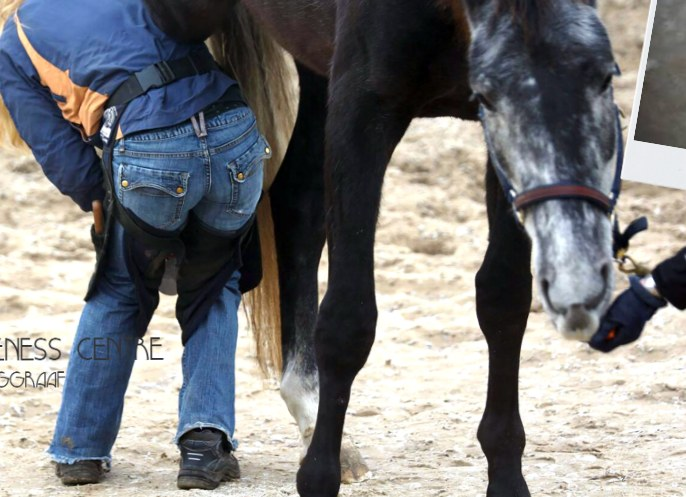

Hoe ziet een werkdag eruit?

Een hoefsmid zit niet de hele dag in de smederij. Meestal rijd je met de auto van klant naar klant om paarden te bekappen en te beslaan. In je eigen werkplaats maak je de hoefijzers op maat. Het is elke dag weer anders.
Hoe laat begint een hoefsmid?
Hoefsmid Rianne Molenaar vertelt: "Rond negen uur 's ochtends ben ik bij de eerste klant op het erf en om een uur of half vijf 's middags zit mijn werkdag erop."
Hoeveel paarden doe je op een dag?
Rianne behandelt meestal tien tot veertien paarden per dag. Hoeveel het er zijn, hangt af van het werk: bekappen gaat sneller dan beslaan.
Met ervaring word je ook sneller. Een andere hoefsmid vertelt dat het beslaan van een paard net na de opleiding 2,5 uur duurde. Nu is dat in drie kwartier klaar.
Wat is zwaar?
- Het werk is lichamelijk zwaar. Een hoefsmid noemt het "een aanslag op je lichaam", zeker als paarden niet stil willen staan.
- Niet elk paard wil stilstaan. "Dan moet je hem toch onder controle kunnen houden. Dat vergt veel kracht en uithoudingsvermogen," zegt Rianne.
- De plek waar je moet werken is niet altijd ideaal. Daarom is veilig werken heel belangrijk.
Wat is leuk?
- Je werkt de hele dag met paarden en pony's.
- Geen dag is hetzelfde. Dat maakt het werk uitdagend en leuk.
- Je kunt een paard echt helpen. Een hoefsmid vertelt dat het mooiste is als een paard met een langdurige klacht dankzij de behandeling niet meer kreupel loopt en weer "happy" is.
- Rianne zegt: "Ondanks dat het verschrikkelijk zwaar is, durf ik onderhand wel te zeggen dat ik nooit meer iets anders wil doen."